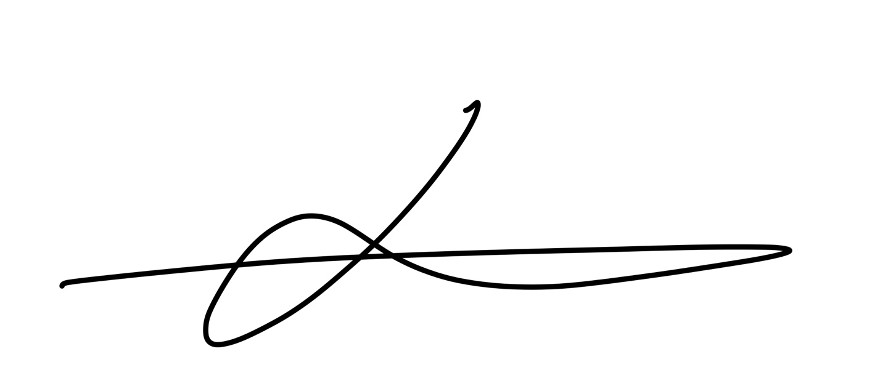
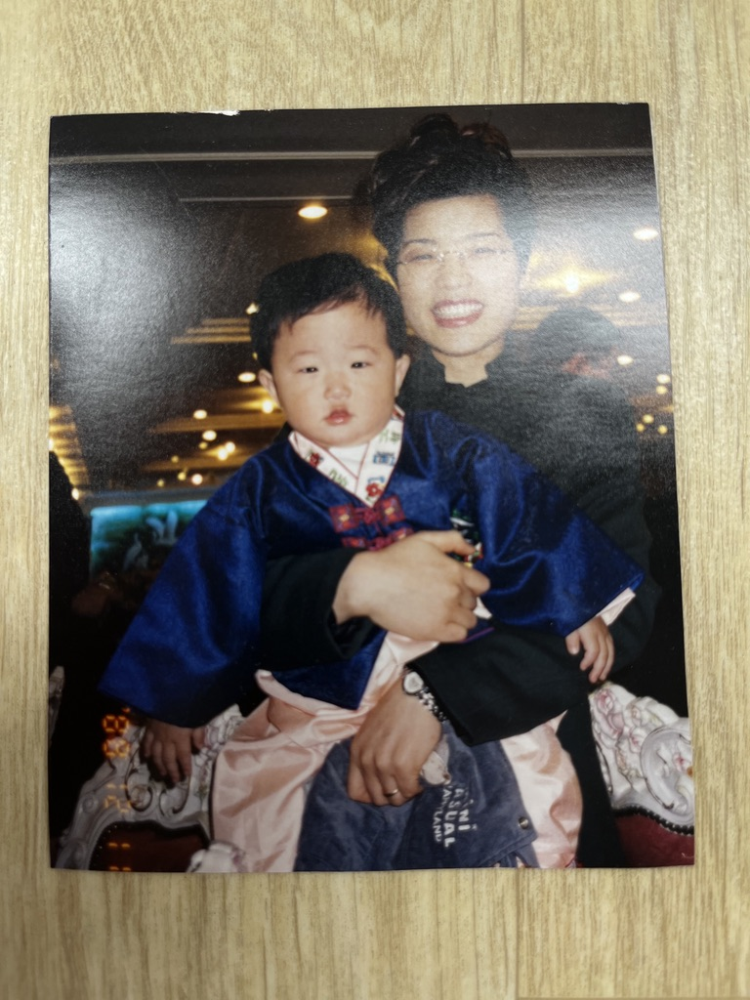
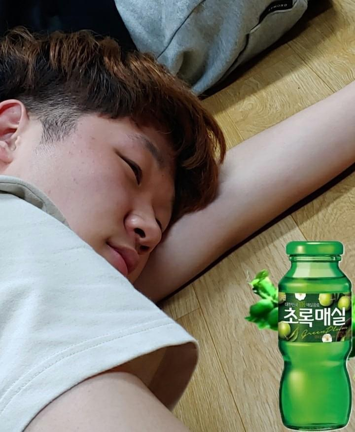
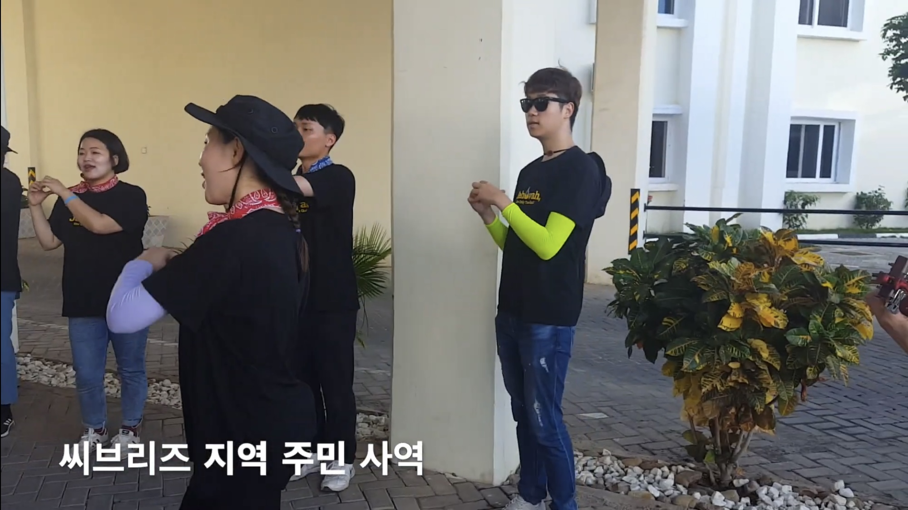
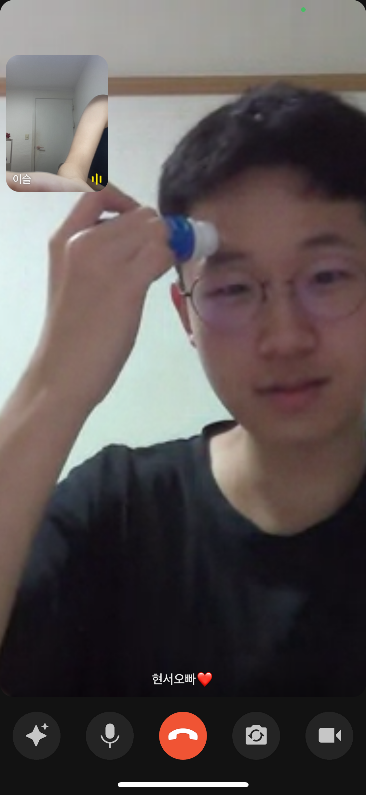
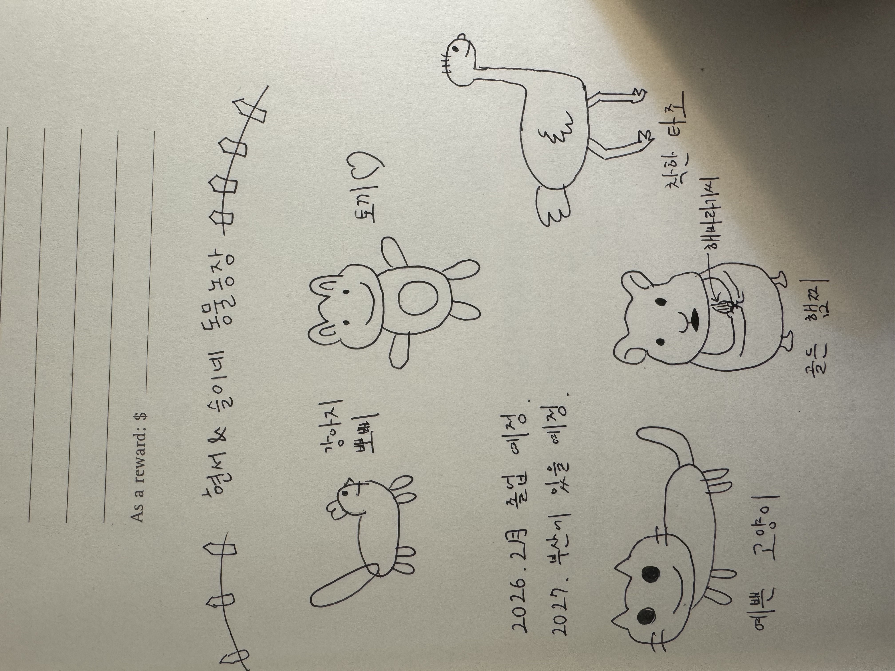

김현서
|
김현서 金炫曙 | Kim Hyeonseo
|
||
|---|---|---|

|
||
| 출생 | 1999년 01월 01일 (27세) | |
| 거주지 | 서울특별시 송파구 잠실동 | |
| 국적 |
 대한민국 대한민국
|
|
| 본관 | 삼척 김씨 | |
| 신체 | 183cm | AB형 | 270mm | |
| 가족 | 아버지, 어머니, 남동생(2002년생), 여자친구 (2023년~현재) | |
| 학력 | 새싹유치원 (졸업) 방산초등학교 (졸업) 방산중학교 (졸업) 보인고등학교 (졸업) 고려대학교 수학교육과 (졸업) 고려대학교 금융공학과 (부전공) |
|
| 종교 | 개신교 | |
| MBTI | ISFJ | |
| 정치성향 | 보수주의 | |
| 서명 |  | |
슬이의 남자친구.
2023년 1월, 25세의 나이에 데뷔했다. 훈훈한 외모와 빛나는 피지컬, 강아지같은 성격을 소유하여 3년째 슬이로부터 사랑과 인기를 독차지하고 있다.

놀랍게도 이 사진의 출처는 담임목사님이다.
오빠는 아가 때 뚱뚱했다고 하는데, 오빠 집가서 앨범으로 확인한 결과 뚱뚱하진 않고 통통했던 것 같다. 한글을 무려 3살 때 떼는 비상함을 보였다.
아가 때 큰엄마에게 업혀 새벽기도에 가던 기억이 있다. 목사님께 찬송가 신청도 했다고 한다.
초등학교 때는 버터영어에 다녔다. 초등학교 때 교과서와 학원책을 모조리 가방에 넣고 다닌 나머지 어깨가 가라앉았다고 한다.. 학교가 끝나면 맨날 투니버스(짱구, 코난, 이누야샤, 아따맘마), 재능티비, 니켈로니언을 봤다.
중1때까지만 해도 특출나게 수학을 잘하는 아이는 아니었다고 한다. 중학교 때 여자애들 셋넷이 몰려와서 현서한테 무슨 질문 하고 현서가 대답하면 지들끼리 웃으면서 갔다고 한다.
정말 웃기다. 절대 사람들이 많은 곳에서 보지 말고, 아껴뒀다가 우울한 날에 트는 것을 추천한다.
본인 피셜 "내가 하는 모든 것이 유행의 중심"이었던 시절이라고 한다.
내가 기억하는 고등학생 현서는 말이 별로 없고 팩폭을 많이 하고 그러나 공부는 엄청 잘하는 그런 캐릭터였다. 아 현빈이 겁주는 장면을 우연히 보게 되어 약간 무서워했던 것 같기도.. 근데 또 컵타 열심히 하는 모습을 보니 꽤 귀여웠을 것이라고 예상된다.
고등학교 때 국어가 4등급이 나와 별명이 언어장애였다.. 과학은 화1 지1을 선택했었다. 지구과학은 9모 때 1등급이었는데 수능 때는 집중력 이슈로 3등급이 나왔다고 한다.
현서는 고려대학교에 17학번으로 입학하였다.
나는 모르던 현서의 화려한 과거이다.

술을 엄청 많이 먹었다고 한다.
대학교 1학년 때 미팅에 한 번 나가본 적이 있다. 과팅이었다. 빠른이라 눈치 보여서 안 나간 것 같은데 자꾸 나한테는 슬이 기다리느라~ 이런다ㅋㅋㅋㅋ 애프터는 안 했다고 하는데 부디 진실이길 바라본다.

2019년 탄자니아에 갔다. 무려 우리 하부랑 같이 갔다.
2019년 10월에는 군대에 갔다. 군대에서는 신호정보병이었다고 한다.
2020년부터 교회에서 인도를 하기 시작한다! 개인적으로는 내가 좋아하는 스타일의 콘티 그리고 은혜 가득한 오빠의 인도스타일을 정말 좋아했다.
패션컨퍼런스를 기점으로 대인기피증을 앓았었다. 같이 준비하고 다녀온 입장에서 충분히 그럴만했다고 판단된다.
2023.01.20~ '인생의 황금기'라고 주장해본다.ㅋㅋ
연애 초반에 못하는 사람이 어디있겠냐만은, 현서는 그때나 지금이나 정말 나의 큰 자랑거리 유니콘 남친이다!
약 1년 간의 임고준비를 함께하고 합격했다!

공부를 열심히 하던 현서도, 새벽마다 나랑 캠스터디 하던 현서도 정말 사랑스러웠다!
할말하않.. 오빠를 만나고 있는 약 3년의 시간 중 내가 가장 이해할 수 없는 모습의 현서였다. 내가 가서 우울증 검사라도 해보라고 권했을 정도.. ex)영상통화 중 울기, 냅다 화내기, 24시간 슬이탓, 등등
훨씬 안정된 모습의 현서이다. 약간의 편함이 함께하는 지금은 현서의 유치한 모습들, 진짜 현서의 모습들을 볼 수 있어 난 더더 매력적이라고 느낀다! 665일 기준 연애초보다 지금이 더 좋다고 했다. 함께한지 3년째인 지금, 심각한 뉴런 동기화 현상을 겪고 있다. 서로가 하려는 말을 자주 스틸당하고, 굉장히 비슷한 말투로 대화한다.
사실 오빠는 나를 만나기 전까지는 미래에 관해 별 기대가 없는 사람이었다. 늘 현재에 충실하고 싶어하는 사람이었고 내가 이런 거 물어보면 "현재에 충실하다보면 다 알아서 되지 않을까?"식의 대답을 많이 했었다.
근데 지금은 오빠가 먼저 초롱초롱한 눈빛으로 미래에 대한 이야기를 많이 하는데, 그 모습이 개인적으로는 너무 귀엽고 또 감사한 부분이다. 내가 결국 구체적으로 그리고 바라는 미래는 현재를 열심히 살아갈 명확한 이유가 되기도 하니까!
2025년 기준 현서가 그리고 있는 미래는 이러하다.
결혼을 일찍 하고 싶어한다. 아이는 3명 이상 낳고 싶어 한다. 이재명이 대통령이 되고 대한민국 공산화의 우려로 해외거주를 나름 염두에 두고 있는 것 같다.
큰 키와 팔다리. 미친 피지컬의 소유자다. 그에 비해 요즘 스타일의 옷을 전혀 입지 않는 것이 특징이다.
얼굴은 너무나 귀엽다.. 몸은 큰데 하는 짓과 얼굴은 너무 귀요미라 "골든 리트리버"가 연상된다. 현서 얼굴의 매력포인트는 강아지 같은 눈, 예쁘고 오똑한 코, 올라가있는 입꼬리인 것 같다.
네 손가락에 비해 짧은 새끼손가락을 갖고 있다. 이거 신기하다고 사귀기도 전에 만지작거렸었는데, 이제 와서 말하자면 고도의 플러팅이었다.
오빠를 처음 보는 웬만한 사람들은 오빠가 매우 차갑고 이성적인 사람이라고 생각한다. 하지만 오빠의 최측근, 제일 베프인 내가 바라보는 오빠의 진짜 성격은 아래와 같다.
- fm, 원칙주의자 - 그래서인지 규칙을 어기고 질서를 어지럽히는 사람들을 매우 싫어한다. 그럼에도 그는 정해진 규칙만 잘 지킨다면 그 외의 것에서는 꽤나 오픈마인드이다.
- 속이 여리다! - 수빈이, 연서가 연애 극초반에 나한테 사귄 후의 오빠는 어떠냐는 질문에 나는 "생각보다 속이 여려" 라고 답했고 "지랄하네"의 대답이 돌아왔다..ㅋㅋㅋㅋㅋㅋ 하지만 생각보다 관계중심적이며 더 중요한 가치가 있다면 덜 중요한 것들은 포기할 줄 아는 멋진 성품을 가진 현서이다.
- 쿨하지 못하다 - 속상한 일이 생겼을 때 꽤 오래 가는 편이다. 나한테는 ~때문에 속상했다! 라고 말로 표현할 수 있는 메타인지가 가능했으면 좋겠지만 아직은 말과 행동으로 기분 나쁨을 잔뜩 티내는 아가... 훈련 중에 있다.
- 정직하다 - 오빠가 말하는 건 정말 literally다. 뭘 꼬지도 않고 함의도 없고 그냥 말그대로다. 말을 안 하는 경우는 있어도 거짓말을 하진 않는다.
- 척하면 척이다! - 그러나 "슬이 한정" 이라고 한다ㅎㅎ
0위: 하나님
1위: 슬이
2위: 이승만 대통령
- 음식: 치즈케이크 상추 규카츠 들깨가루 카야버터 스콘 떡 돈까스(등심) 새우튀김 새우 와사비마요 삼겹살 참치김밥 곱창 두유 삶은계란 사과 바나나 포도 참외 귤 오렌지 복숭아 망고 타로밀크티 메밀전병 칼국수 로투스맛 디저트 반미 단호박식혜 건빵 제육볶음 칼국수 햄버거 앙버터 떡
- 슈붕<팥붕
- 치마입고 한쪽으로 다리 꼰 거
- 진격의 거인
- 색깔: 에매랄드 색
- 슬이 머리 냄새 맡기, 인중 솜털 만지기, 볼 와구와구 하기
- 최애 찬양: 예수로 나의 구주 삼고를 4분의 4박자로 부르는 것
- 최애 성경: 창세기 1:27
- 음식: 쌀국수, 토마토, 말차, 생강, 양배추, 선지, 간장게장, 유부초밥, 연근, 너구리, 마라탕, 맥스봉, 냉모밀, 냉우동, 밀크티, 무화과, 곶감, 낫또, 딸기, 마늘쫑, 체리, 후리가케, 콩
- 바지 고무줄이 틀어지는 것
- 내가 조금 보고 싶다고 하는 것, 조금 사랑한다고 하는 것
- "알아서 해~"도 다소 속상해한다
- 침대에서 과자 먹는 것
- 연락 갖고 뭐라고 하는 것
- 수학
- 기타
- 드럼
- 찬송가 편곡하기
- 기억력이 정말 좋다. 내가 하는 대부분의 말을 기억하고 있다고 보면 된다.
- 습득력이 정말 빠르다. 실제로 내가 불편해하는 거의 모든 것들은 재발되지 않는다.
- 다정함
- 철봉에 매달리기
- 그림 그리기
 - 색칠하기
- 디자인
- 본인 말로는 운동신경이 없다고 한다
- 사진찍기
- 메이저리그를 즐겨본다. 근데 한국이랑 일본 선수 하이라이트만 챙겨본다. 보통 퇴근 후 유튜브로!
- 오빠는 질투가 나면 나한테 못되게 군다.
- 심각한 분리불안이 있다.
- 정말 의외로 응답하라의 모든 시리즈를 시청해였다. 응4가 제일 좋았다고 한다
- 수염 최대 일주일 길러봤다
- 그의 첫사랑은.. ME! 바로 나이다~
- 과외 이외의 알바는 해본 적이 없다
- 에이핑크를 좋아했었다. 최애는 윤보미. 콘서트도 간 적이 있다.
- 첫 야동은 중학교 때 친구가 보여줬다고 한다
- 26도가 넘으면 숨쉬기가 힘들어진다고 한다
- 동물을 키우느니 사람을 키우는 게 낫다고 생각한다. 들이는 돈에 비해 가치가 크다고 생각하기 때문이다.
- 마을 버스를 보면 타보고 싶은 마음이 든다고 한다.
- 엉덩이는 2개라고 생각한다. 이산수학에서는 1개라고 생각한다고 한다.
- 내가 바퀴벌레로 변한다면.. 그럴일 없다고 이런거 그만물어보란다.. 죽이진 않을 거라고 한다
- 하늘에서 정육면체가 떨어지고 나랑 오빠, 나랑 바람핀 남성이 있고 오빠에겐 총 한 발이 있다면 그 남자를 죽일 거라고 한다. 그러나 정육면체가 떨어지며 내가 모서리에 맞을까봐 걱정된다고 한다(?)
- 내가 죽으면 따라 죽겠다고 한다ㅋㅋㅋㅋㅋㅋㅋㅋ
???:내가 슬이 없이 어떻게 살아 ㅠㅠㅠㅠㅠ - 내가 기억상실증에 걸려서 오빠를 잊어버린다면 매일매일 자기소개를 해주고 포스트잇에 써서 벽에 붙여줄거라고 한다
- 인도네시아 셀프체크인할 때 슬펐다고 한다
- 당장 갑자기 로또에 당첨된다면? 슬이에게 반 줄거야<-이런다ㅋㅋㅋㅋㅋㅋㅠㅠㅠㅠ
- 살면서 겨털 밀어본 적 없다고 한다
- 인도네시아에 다녀온 후 나에게 기념품으로 돌맹이를 주었다.
- 닮은 연예인: 정해인, 정준원(구도원), 백현
"세상은 두 부류의 사람으로 나뉜다. 슬이와 슬이가 아닌 사람."
"슬이가 교환 가서 우리가 6개월 떨어지게 된 것은 쓸데없이 비행기를 만든 라이트형제 탓"
Q. 슬이는 왜 창조되었어?
A. 내가 잡아먹으라고
"슬이는 모유만 짜놓고 가, 애는 내가 키울게"
Q. 오빠는 어떨 때 제일 기뻐?
A. 슬이가 기쁠 때
Q. 오빠는 어떨 때 제일 슬퍼?
A. 슬이가 슬플 때, 슬이가 찐따라고 갈굴 때
자세한 내용은 김현서/논란 및 사건 사고 문서를 참고하십시오.